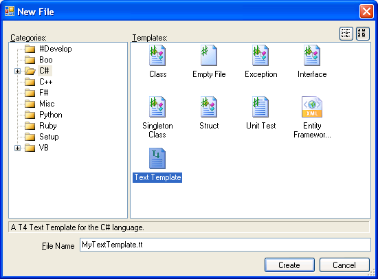
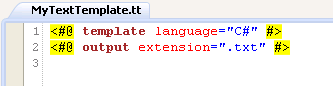
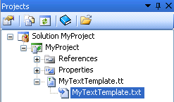
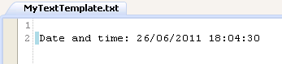
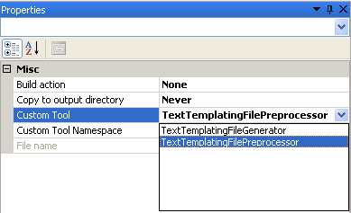
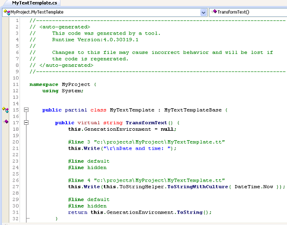
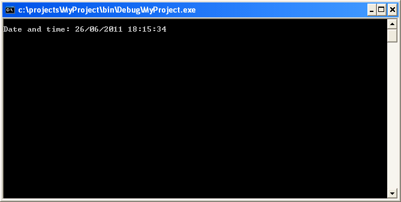

SharpDevelop 4.1 now has integrated support for T4 Templates. The T4 code generation engine for MonoDevelop has been used to make this feature possible so a big thanks to Michael Hutchinson for creating this. Features include:
Code completion for T4 templates is not currently supported.
Open a project in SharpDevelop, right click the project and select Add, New Item. This will open the New File dialog. There are two T4 templates available, one for C# and one for VB.NET.

Select the appropriate file template, give it a name and click the Create button.

Now you can edit the T4 template. In the example below we have modified the T4 template so it generates the current date and time when it is saved.
<#@ template language="C#" #> <#@ output extension=".txt" #> Date and time: <#= DateTime.Now #>
When the file is saved a new file will be created. In the Projects window this new file will be a child of the T4 template file.

Opening this file in the text editor shows text generated by the T4 template.

SharpDevelop also supports preprocessed T4 templates. A preprocessed T4 template will create a class which can be used by your application at runtime to generate text. We will take our previous template and convert it to a preprocessed T4 template. To do this select the T4 template file in the Projects window, right click and select Properties. Select the Custom Tool property and change it to be TextTemplatingFilePreprocessor.

Now when you save the T4 template a file will be generated containing a class.

This class can then be used in your application to generate text at runtime. Shown below is a simple example of how this class could be used.
using System;
namespace MyProject
{
class Program
{
public static void Main(string[] args)
{
MyTextTemplate template = new MyTextTemplate();
string text = template.TransformText();
Console.WriteLine(text);
Console.ReadLine();
}
}
}
The result of running the above code is shown below.

For more information on creating T4 templates take a look at Oleg Sych's excellent set of T4 tutorials.